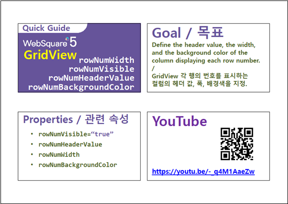

GridView의 행 번호 컬럼의 부가 기능 설정 예시입니다. 예제에 설정한 기능은 속성 rowNumVisible(행 번호 표시 설정)이 true로 지정되어야 동작합니다.
아래 목록은 적용 속성별 설명입니다. - rowNumVisible : 행 번호 표시 여부 지정 - rowNumWidth : 행 번호 컬럼 너비(폭) 지정 - rowNumHeaderValue : 행 번호 컬럼의 헤더의 출력 값(레이블) 지정 - rowNumBackgroundColor : 행 번호의 바디 컬럼의 배경생 지정 - rowNumStatusResize : 행 번호 컬럼의 리사이즈 가능 여부 지정
행 번호 표시 및 부가 기능 설정
행 번호 표시만 설정
영역 [행 번호 표시 및 부가 설정]의 GridView를 확인합니다.
- 첫 번째 컬럼에 행 번호가 표시됩니다.
- 행 번호 컬럼 너비(폭)이 '34px'로 지정되었습니다.
- 행 번호 컬럼의 헤더에 번호가 표시됩니다.
- 행 번호의 바디 컬럼의 배경색이 '#f0f2f4'로 지정되었습니다.
- 행 번호 컬럼의 리사이즈가 가능합니다. (헤더 컬럼에서 조작)
[브라우저(Chrome) 실행 예시]
영역 [행 번호 표시만 설정]의 GridView를 확인합니다.
첫 번째 컬럼에 행 번호가 표시됩니다.
[브라우저(Chrome) 실행 예시 - 행 번호 표시]
STEP1. GridView의 속성을 정의합니다.
[필수] rowNumVisible="true" //[default:false, true] 행 번호 표시 여부
[선택] rowNumWidth="34" //행 번호 컬럼 너비(폭) 지정
[선택] rowNumHeaderValue="번호" //행 번호 컬럼의 헤더의 출력 값(레이블) 지정
[선택] rowNumBackgroundColor="#f0f2f4" //행 번호의 바디 컬럼의 배경색 지정
[선택] rowNumStatusResize="true" //[default:false, true] 행 번호 컬럼의 리사이즈 가능 여부 지정
그림 1.웹스퀘어5 SP5 스튜디오의 Property View(속성창) 예시
[소스 코드 예시]
<!-- gridView 의 소스 본문 예시 --> <w2:gridView rowNumVisible="true" rowNumWidth="34" rowNumHeaderValue="번호" rowNumBackgroundColor="#f0f2f4" rowNumStatusResize="true" dataList="data:dlt_books_1" style="height: 100px;"> <!-- 중략 --> </w2:gridView>
rowNumVisible
rowNumWidth
rowNumHeaderValue
rowNumBackgroundColor
rowNumStatusResize
setStartRowNumber( rowIndex )
[웹스퀘어5 SP5 개발 가이드] GridView
링크 : https://docs1.inswave.com/sp5_user_guide/bc10c1b82c9a2a0b#e1c4658baf7e726f
[웹스퀘어5 SP5 개발 가이드] GridView 행 번호 표시 컬럼의 헤더 값, 폭, 배경색 지정
링크 : https://docs1.inswave.com/sp5_user_guide/86bdcf48029b958b#a5bc77b853651f01
GridView 행 번호 표시 컬럼의 헤더 값, 폭, 배경색 지정
링크 : https://youtu.be/-_q4M1AaeZw
